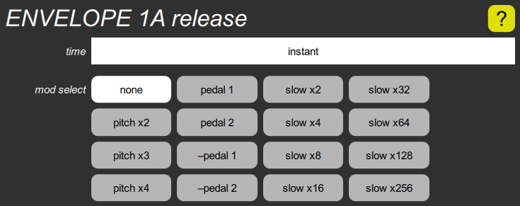

ENVELOPE release cluster

This contains a time slider to set the time it takes for the envelope to drop toward zero when the key is released. Since it slows down as it approaches zero, and theoretically never gets there, this is actually the “time constant”, indicating how long it would have taken to get to zero if it didn’t slow down.
This also contains a mod select parameter that can slow the release by various ratios, for “slow” key releases, defined as a release velocity less than the global release threshold parameter. It can also use either pedal to vary the release time from its nominal setting to whatever the decay time is set to, rather like a variable sustain pedal.